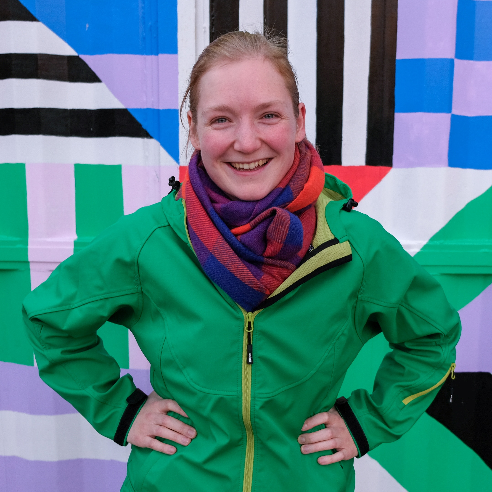

Curriculum Vitae
Fakta om mig
Født: d. 18. september 1990.
Nationalitet: dansk
Sprog: dansk, engelsk, spansk, islandsk.
Stil: uforglemmelig, tidløs, bemærkelsesværdig.
Erfaring
[2020-2021] AML-rådgiver / Compliance Officer i Danske Bank
[2019] Barsel med min datter Hannah
[2018] Speciale i museumsundervisning og brug af kamera til læring på museet.
[2016] Barsel med min datter Esther.
[2015-2018] Visual Anthropology / kandidatuddannelse i antropologi på Århus Universitet.
[2011-2015] Bachelor i antropologi.